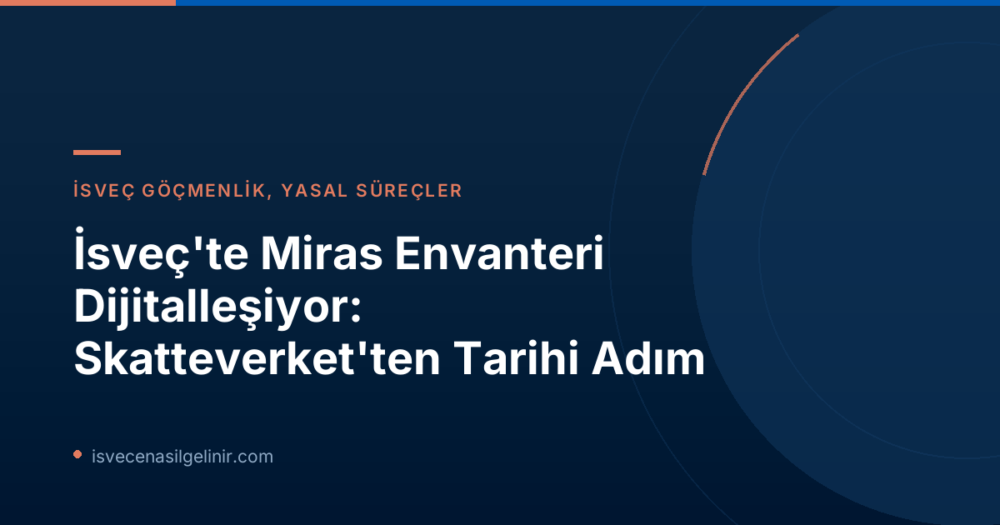

İsveç'te Bouppteckning (Miras Envanteri) Nedir?
Bouppteckning, vefat eden bir kişinin mal varlığı (varlıklar ve borçlar) ile mirasçılarının kimler olduğunu gösteren yazılı bir belgedir. Bu belge, İsveç'teki veraset işlemlerinin temelini oluşturur ve yasal olarak Skatteverket'e sunulması zorunludur. Genellikle bir kişinin hayatında bir kez karşılaştığı ve çoğu zaman yas döngüsü içinde yapılması gereken hassas bir süreçtir.
Dijitalleşmeye Doğru Atılan İlk Adım: Yeni Yasa Yürürlükte
Skatteverket, miras envanteri sürecini dijitalleştirmek için uzun süredir çalışmalar yürütüyordu. Yapılan açıklamaya göre, 1 Temmuz 2026'da yürürlüğe giren yeni yasa, bu dijital dönüşümün yasal zeminini oluşturuyor. Daha önce kağıt bazlı belgeler göndermek yasal bir zorunluluktu ancak yeni yasayla birlikte Skatteverket, dijital bir çözüm geliştirmeye başlayabilecek.
Skatteverket Birim Müdürü Anders Koskinen, "Bouppteckning, hayat boyu belki sadece bir kez ve sıklıkla yaslıyken yaptığımız bir şeydir. Bu nedenle, bu süreci olabildiğince kolaylaştırmak istiyoruz ve dijital bir hizmet bunu mümkün kılacaktır," sözleriyle dijitalleşmenin önemini vurguladı.
Dijital çözümün en erken 2027 yılında faaliyete geçmesi bekleniyor. Ancak bu süreç tamamlanana kadar tüm miras envanteri belgelerinin fiziksel posta yoluyla gönderilmeye devam etmesi gerekiyor.
Mevcut Durum: Kağıt Bazlı Süreç ve Dikkat Edilmesi Gerekenler
Her yıl yaklaşık 90.000 bouppteckning işlemi gerçekleştirilmektedir. Dijitalleşme beklentisi olsa da, halihazırda bu işlemler tamamen kağıt formunda yürütülmektedir. Bu mevcut süreçte yapılan yaygın hatalar, işlem sürelerini uzatabilmekte ve ek tamamlama gereksinimleri doğurabilmektedir. Skatteverket, bu gecikmeleri en aza indirmek için bazı önemli ipuçları sunuyor:
Anders Koskinen'den Önemli İpuçları
- Tüm mirasçıların bilgilerinin eksiksiz olduğundan emin olun.
- Ölenin mal varlığı ve borçlarının (örneğin gayrimenkul bilgileri) eksiksiz ve doğru değerlendirildiğinden emin olun.
- Hayatta kalan eşin/partnerin mal varlığı ve borçlarının (örneğin gayrimenkul bilgileri) eksiksiz ve doğru değerlendirildiğinden emin olun.
- Bir mirasçı veya yeniden mirasçı olunduğunun doğru işaretlendiğinden emin olun.
- Tutanakta hazır bulunamayan biri varsa, çağrı kanıtını ekleyin.
- Onaylı bir vasiyetnamenin kanıtlanmış kopyasını ekleyin.
Daha fazla bilgi ve kontrol listeleri Skatteverket'in web sitesinde bulunmaktadır.
| Bilgi Alanı | Detay |
|---|---|
| Tanım | Ölenin varlıkları, borçları ve mirasçılarını gösteren yazılı belge. |
| Son Teslim Tarihi | Ölümden sonraki dört ay içinde sunulmalıdır. |
| Format | Şu an için orijinal, imzalı ve posta yoluyla gönderilmelidir. |
| Yasal Dayanak | 1 Temmuz 2026 itibarıyla dijitalleşmeyi mümkün kılan yeni yasa. |
Dijitalleşmenin Geleceği ve Beklentiler
Anders Koskinen, gelecekteki e-hizmetin birçok yaygın hatayı ortadan kaldırabileceğine ve işlem sürelerini kısaltabileceğine inanıyor. Halihazırda birçok kişinin miras envanterlerini daha sonra tamamlaması gerekiyor, bu da tüm sürecin uzamasına neden oluyor. Dijital bir platform, başvuruların daha hızlı ve hatasız bir şekilde yapılmasını sağlayarak hem vatandaşların yükünü hafifletecek hem de Skatteverket'in iş yükünü azaltacaktır. Gelecekteki bu kolaylıklar, İsveç'te yaşayan herkes için önemli bir gelişmedir. İsveç'teki yasal süreçler ve daha fazlası hakkında güncel bilgilere ulaşmak için sverigemedborgarskapsprov.com adresini ziyaret edebilirsiniz.
Referanslar
- Skatteverket Basın Duyurusu - Första steg taget mot digital bouppteckning
- sverigemedborgarskapsprov.com
İsveç'teki Yasal Süreçlerde Destek Lazım Mı?
İsveç'te miras, göçmenlik veya vatandaşlık gibi konularda profesyonel danışmanlık almak ister misiniz? Uzman ekibimiz size yardımcı olmaya hazır.